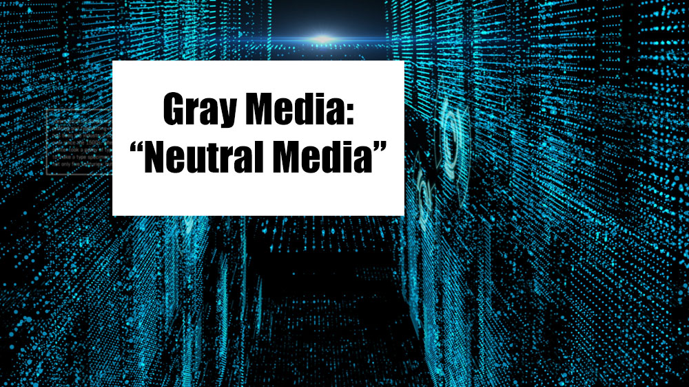
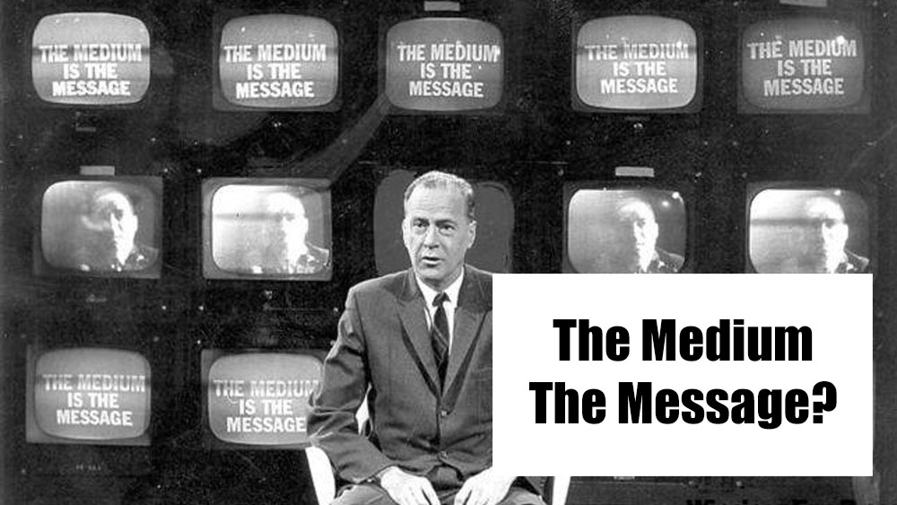
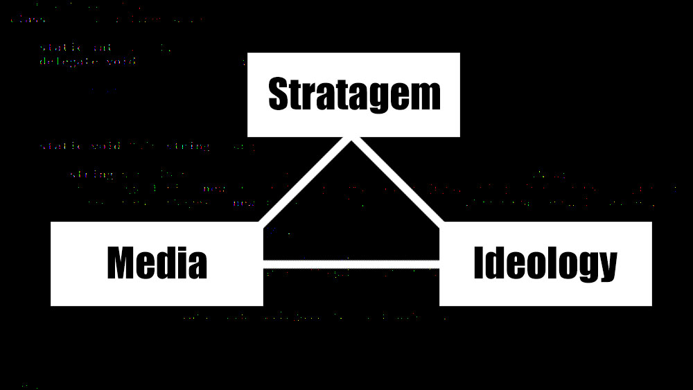
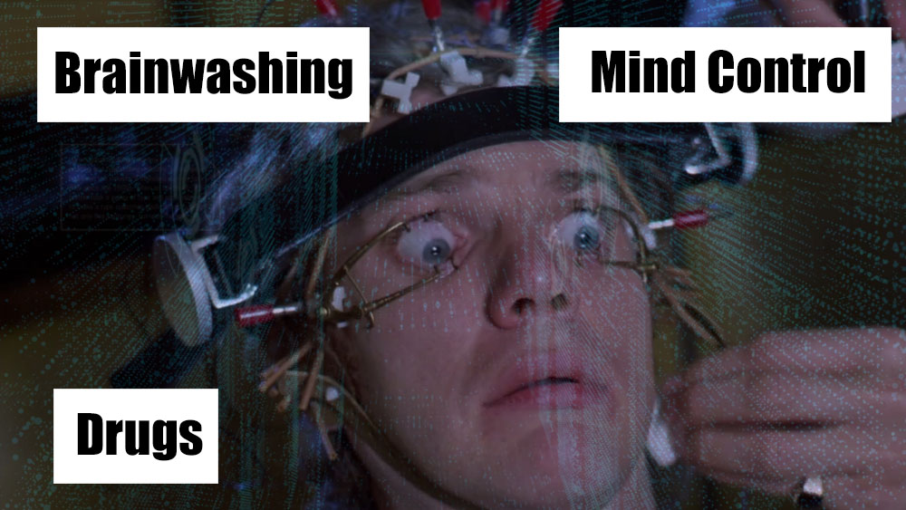
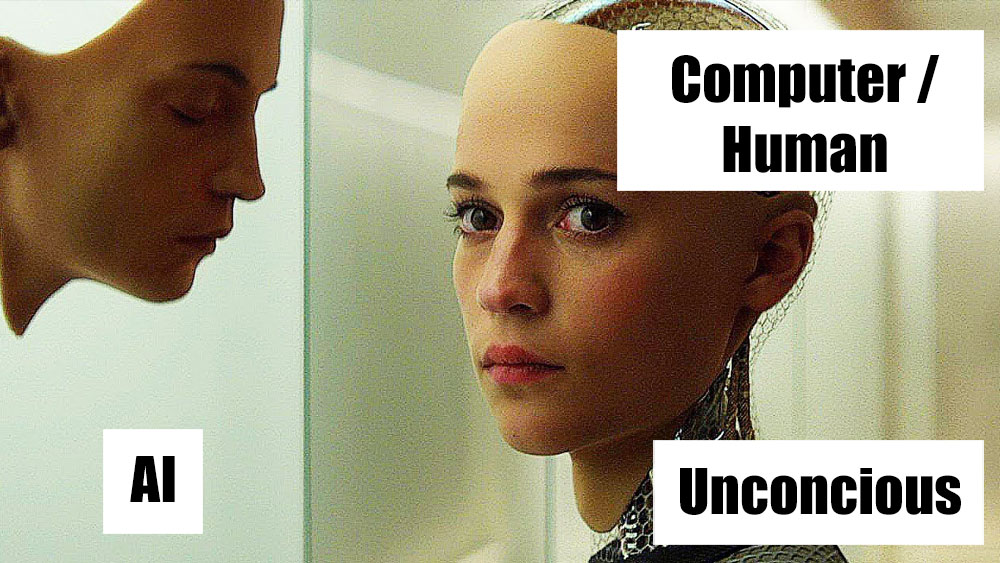
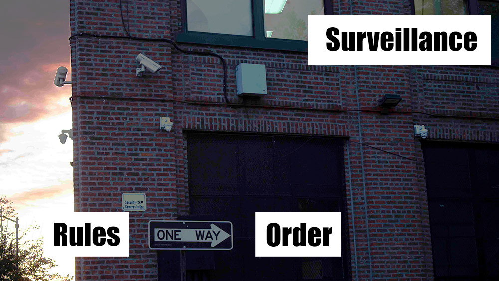
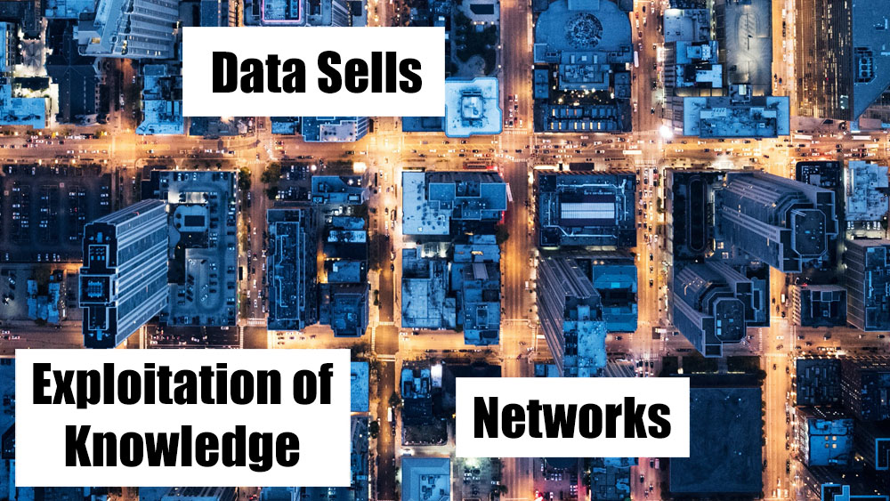
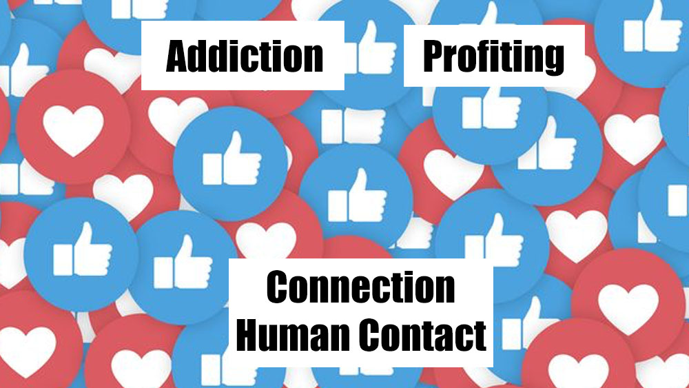
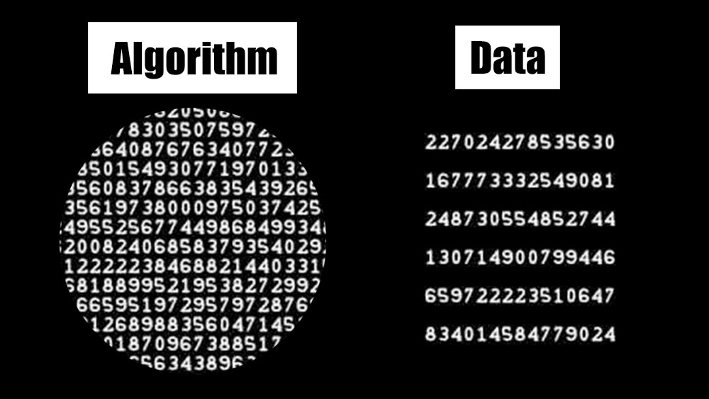

Matthew Fuller, Andrew Goffey
Q. What is Evil Media?
Gray Media
"bureaucratic media: databases, algorithms, ecnonomic markets, manuals, science/tech"

Mediation

Stratagems

Intelligence
"In this way, the faults and disturbances marking our mental universes offer the same kinds of opportunities for exploitation as do bugs in the algorithmic Intelligence universes of software, and one stratagem is always in the position of being able to turn another to its own account."
Brainwashing

Systematic Ambiguity
"The evils of media lay in the patterns of the way we put thoughts into each other's heads, making manufactured things seem like human nature, and science is the means by which we justify these truths."

Leverage Anxiety
Hoaxes, creation of the "other" and the "enemy"
Togetherness
"Inside the box, the rules are followed, no matter what they are."
Social Engineering

Economize Behavior

Mobilizing Irritation

Algorithms
"A device or application that captures the attention, the energy, the time, of a user most successfully is in all likelihood the device or application that obtrudes least in the practices of which it is a part (note that where the obtrusiveness cannot be mitigated, it is best to recode this obtrusiveness as display, decoration, or ornamentation)".

By Ali Salifov & Catherine Benge